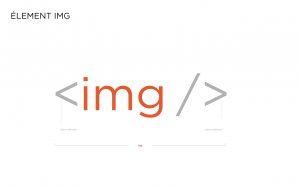

Cet attribut permet
Cet attribut permetd'idiquer le chemin d'accés à l'image qui doit être affiché. Le chemin d'accès
s'indique usuellement relativement à la page contenant l'élément img.
Voici quelque exemples:
Dans beaucoup de sites, les médias occupent de plus en plus de place.
Ces médias, ces images doivent être choisi avec soin et optimisés au mieux pour
un chargement rapide sur tous les supports actuels: écran d'ordi, de
tablette et de tel. Il y a donc un travail important de la part des
graphistes pour choisir la bonne image, définir ses dimensions en fonction des
divers supports et déterminer un rapport compression/poids adéquat.
Dans les pages web, les images sont des contenus "embarqués", car elles
ne sont pas directement décrites dans le contenu du fichier HTML. Les fichiers
des images sont usuellement palacés dans un dossier spécifique dans le dossier
du site et elles sont insérées dans la page web en indiquant leur chemin
d'accès.
L'élément img  est fait pour insérer des images d'illustration directement
liées au contenu rédactionnel. D'un point de vue sémantique, cet élément
n'est pas faite pour appliquer une image de fond à un en-tête ou toute autre
zone d'affichage dans la page.
Le premier attribut quasiment obligatoire est src.
Cet attribut permet
d'idiquer le chemin d'accés à l'image qui doit être affiché. Le chemin d'accès
s'indique usuellement relativement à la page contenant l'élément img.
Voici quelque exemples:

L'attribut alt permet de renseigner le texte alternatif à l'image, si celle-ci ne
peut être chargée, donc d'affichée. Son utilisation est ainsi quasiment obligatoire.
Voici son utilisation
Voici le code d'un exemple où l'image ne peut être chargée:

Voici l'affichage obtenue dans Google Chrome:

Nous avons une icône standard de google Chrome qui indique que l'image ne
peut être chargée et c'est le texte alternatif qui est bien affiché à la place de
l'image.